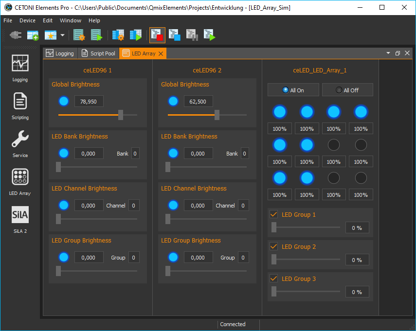
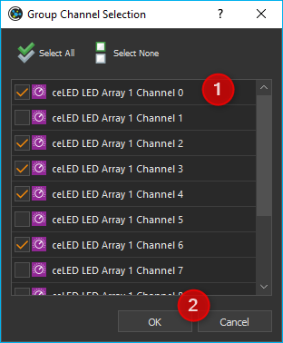
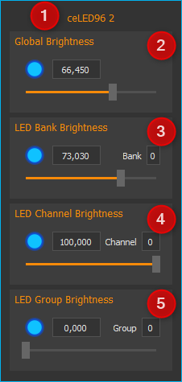
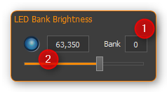
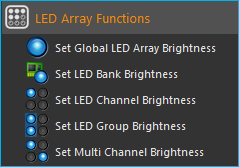
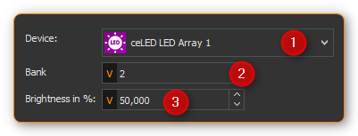
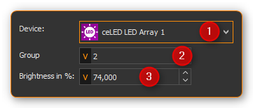
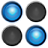
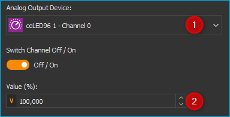

LED Array Plugin
Introduction

Press the button LED Array in the side bar or use the menu item to show the View of the LED Array plug-in (figure below).
The LED Array View contains a separate control panel for each connected LED array device.
Hardware Version
Depending on the LED array hardware version a corresponding LED array control panel is displayed for every LED array. The following two hardware versions are supported:
LED Array Hardware V1 |
LED Array Hardware V2 |
|---|---|
Hardware version 1 supports 12 independent LED array channels with a resolution of 100 steps to adjust the brightness. |
Hardware version 2 supports a virtually infinite number of independent LED channels with a resolution of 4096 steps to adjust the brightness. |
LED Array Control Panel V1

Caption (customizable)
all LED channels on / off
adjust the brightness of individual LED channels (0 - 100%)
adjust the brightness of multiple LED channels (LED group) at the same time
You can change the caption of each LED array control panel at any time. To change the caption, directly click the caption label ❶ and type in the new name. This name will be saved and reloaded the next time you start the software.
Setting brightness of individual LED channels
You can set the brightness of each LED channel by entering the value directly in the field below the LED ❷ (0 - 100%) or by clicking the right mouse button on an LED and dragging the brightness slider ❶ (see figure below).

Click with the left mouse button on an LED to switch individual LED channels on and off.
As all LED channels are normal analog output channels in the QmixElements software, you can also adjust the brightness of individual LED channels via the I/O Channels window (figure below).

LED Group Control
Introduction
When multiple LED channels should work synchronously, you can combine these channels into groups and control them together. The control panel contains three sliders to adjust brightness of three different LED channel groups.
Configuring LED channel groups
To select the channels to be combined into a group, click the right mouse button in the control area of a certain group to show its context menu. Then select the menu item (see figure below).
In the LED group configuration dialog (figure below) you can select all LED channels to be grouped together. Check each channel to be part of this group ❶ and confirm your selection by clicking OK ❷.
Controlling LED groups
You can change the brightness of an LED group with the slider ❶ or by entering the brightness value in the input box ❷ (see figure below).
With the check mark in the upper left corner ❸, you can switch all LED channels in this group on /off simultaneously.
Configuring Standby-Timer
The LED Array has a standby timer functionality. This means, all sectors of the LED Array are automatically switched off after the last action of the user in the software and after the standby time is over. Every change in parameters in the software resets the standby timer and reactivates the array.
Important
The standby timer value is saved in the LED Array. I.e. even if the connection to the PC is lost, the LED array is switched off after the standby time is over.
To configure the standby time, click with the right mouse button on a blank area in the LED array control panel to display the context menu. Then select the menu item (figure below).
In the configuration dialog displayed (figure below), you can configure the hours, minutes and seconds of the standby timer. Your changes are accepted by clicking on OK and the standby time will be saved in the device.
Important
Enter a value of 0 for Hours, Minutes and Seconds to deactivate the standby timer.
LED Array Control Panel V2
You can change the caption of the LED array at any time. To change the caption, click the caption label ❶ and enter a new name for the LED array. This name will be saved and reloaded the next time you start the software.
Setting the Global Brightness
You can set the global brightness of all LED channels at the same time by using the slider ❷ or the input field of Global Brightness. With the check mark in the top left corner ❶ you can switch the global Enable signal of the LED array. The array can be switched on and off this way without changing the brightness of the individual channels.

Important
The Enable signal must have been activated for the LEDs of the array to light up.
Setting the Brightness of LED Banks
LED banks are device-specific and hardware-specific groups of individual LED channels in groups. LED banks group LED channels that also form a physical group in the hardware, e.g. all LEDs on one board or all LEDs of a certain type (e.g. warm white or cold white). These groups are anchored in the firmware and cannot be changed by the user.
To change the brightness of a bank, select the bank in the Bank ❶ input field and then set the brightness of the selected bank using the slider or input field ❷.
Setting the Brightness of Individual LED Channels
In LED Channel Brightness you can set the brightness of individual LED channels. For this purpose select the channel in the Channel ❶ input field. You can change the brightness by using the input field ❷ or the slider.

To switch a channel on or off, click the left mouse button on the relevant LED ❸.
As all LED channels are analogue output channels in the software, you can also change the brightness of individual channels via the I/O Channels window (see figure below).
LED Channel Groups
Introduction
When multiple LED channels should work synchronously, you can combine these channels into groups and control them together. The group channels can then be used to jointly control all channels of an LED group.
Configuring the LED channel groups
To configure LED channel groups, right click into the LED Group Brightness panel and select the menu item from the context menu.
The dialogue for the LED group configuration will be shown now (see figure below).
To add LED channels to a group, proceed as follows:
First, go to the group list box ❷ and select the group to be configured.
Now, select from the channel list ❶ the channels to be added to the group by clicking with the mouse button.
Select individual channels by clicking
Select multiple connected channels by clicking with the mouse on the first channel on the first channel. Keep the Shift key pressed while clicking on the last channel.
Multiple independent channels can be selected by keeping the control key pressed while clicking.
Now, add the selected channels to the group by clicking the Plus button ❸. To delete individual channels from the group, select the channels from the group list and then click the Minus button ❹. To delete all channels from the group, click the Clear LED Group ❺ button.
After having configured all groups click OK ❻. The group configuration will then be transmitted to the device. If you want to permanently save the group configuration in the device, click Yes in the message window displayed (see figure below).
{kind=link}
{kind=link}

Setting the brightness of LED groups
To change the brightness of a group, select the group from the Group ❶ input field and then set the brightness of the selected group using the slider or the input field ❷.
Script Functions
The LED Array Plugin provides various script functions that can be used to program automated exposure sequences or for time-controlled exposure. The script functions are available in the categories of LED Array Functions and I/O Functions.

Set Global LED Array Brightness
{kind=link}
The global brightness of all LED channels of an LED array can be set jointly by this script function. To configure the script function, proceed as follows (see figure below):

First, select the LED device from the list of devices.
Then, set the brightness (0 – 100%).
Tip
This function supports script variables. Variables can be used in the Brightness field.
Set LED Bank Brightness

You can set the brightness of entire LED banks by this script function. To configure the script function, proceed as follows (see figure below):
Select the LED Array device.
Select the bank the brightness of which is to be changed.
Set the brightness (0- 100%).
Tip
This function supports script variables. Variables can be used in the Bank and Brightness field.
Set LED Channel Brightness
{kind=link}
This script function can be used to set the brightness of individual LED channels. To configure the script function, proceed as follows (see figure below):

Select the LED Array device.
Select the channel the brightness of which you want to set.
Set the brightness (0- 100%)
Tip
This function supports script variables. Variables can be used in the Channel and Brightness field.
Set LED Group Brightness

You can use this function to set the brightness of an LED group in a script-controlled manner. To configure the script function, proceed as follows (see figure below):
Select the LED Array device.
Select the group the brightness of which you want to set.
Set the brightness (0- 100%).
Tip
This function supports script variables. Variables can be used in the Channel and Brightness field.
Set Multi Channel Brightness
{kind=link}
You can use this function to set simultaneously the brightness of multiple LED channels in a script-controlled manner. To configure the script function, proceed as follows (see figure below):
Select the LED Array device.
Set the brightness (0- 100%).
Check every channel of the list which is to be controlled.
Important
If a large number of channels have been selected, the data transfer for all channels may take some time so that not all channels will be switched exactly synchronously. If such delay is undesired, use LED groups.
Tip
This function supports script variables. Variables can be used in the Brightness field.
Set Analog Out

All LED channels are normal analog output channels in the software. To adjust the brightness of individual channels, you can use the Set Analog Out function from the I/O Functions category.
Select the relevant LED channel from the configuration menu Analog Output ❶ and enter the brightness value ❷ (0 – 100%) in the Value field.
Tip
This function supports the use of variables, i.e. you can enter in the Value field ❷ the name of the variable instead of a value which contains the brightness value at the run time of the script.